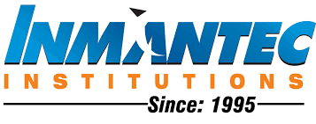
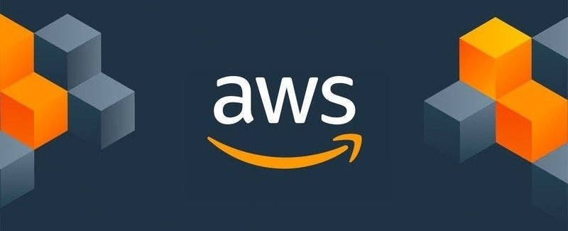

Master of Computer Applications — AI/ML & Cloud Infrastructure
Inmantec Institutions, Ghaziabad · 2024 — 2026
Relevant coursework
- Machine Learning & AI
- Data Structures & Algorithms
- DBMS
- Cloud Computing & Distributed Systems
AI systems · Production engineering · Noida
AI/ML engineer shipping RAG platforms, real-time IoT intelligence, and backend systems that stay fast under load.
Profile
AI/ML Engineer with 2.5+ years building production AI systems that ship — not prototypes that impress in demos. I work where machine learning meets infrastructure: multi-class fault detection across 100+ industrial sensors, RAG pipelines that cut support tickets by 40%, and financial copilots that turn natural language into live database queries for executive dashboards. Lately my focus is document and knowledge intelligence — OCR ingestion, entity graphs, temporal fact tracking, and hybrid retrieval — the plumbing that makes AI answerable to real business records. Currently: Senior Associate AI/ML Engineer at AcoBloom International.
Lower downtime-prediction latency on live IoT streams
Faster queries after storage and indexing work
Fewer support tickets with production RAG
Uptime across 50+ enterprise users
Where I go deep
Foundations

Master of Computer Applications — AI/ML & Cloud Infrastructure
Inmantec Institutions, Ghaziabad · 2024 — 2026
Bachelor of Computer Applications — 78%
Tula's Institute, Dehradun · 2021 — 2024
Proof of craft

Impact in production
Senior Associate AI/ML Engineer · Noida
AI/ML Engineer · Noida
AI/ML Developer · Delhi
Machine Learning Developer Intern · Pune (Remote)
Selected builds
PDFs compiled into structured wikis, queried by hybrid BM25 + vector retrieval.
100+ live sensors in TimescaleDB, paired with a Pinecone diagnostic assistant.
Operating-mode classifier built on time- and frequency-domain sensor features.
Production RAG for technical documents and equipment support.
Civic product focused on recycling awareness and notifications.
Vision model with a reproducible MLOps training pipeline.
Screening pipeline for visual inspection and classification.
Tooling I actually ship with
Continue elsewhere
Let’s build something durable